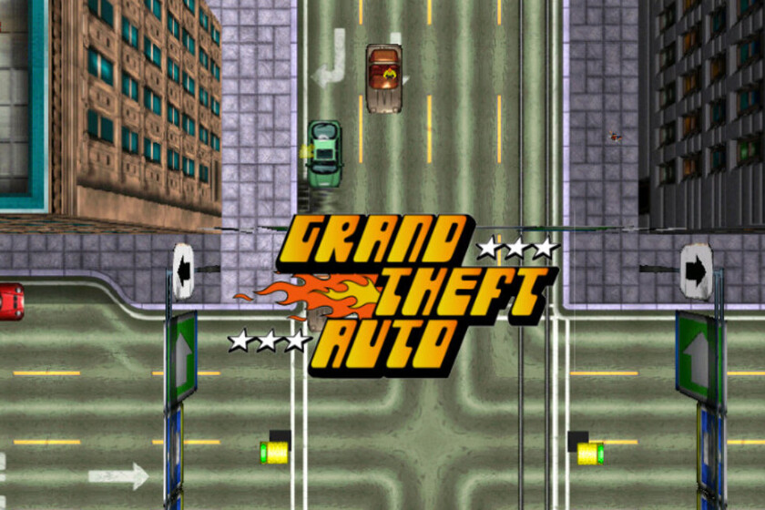

La saga Grand Theft Auto (GTA) es una de las franquicias más exitosas e influyentes en la historia de los videojuegos. Desarrollada por Rockstar Games y creada originalmente por DMA Design (ahora Rockstar North), GTA revolucionó la industria con su innovador concepto de mundo abierto, libertad de acción y narrativa criminal inspirada en el cine de gánsteres.
Desde su primer lanzamiento en 1997, la serie ha pasado por tres eras: 2D, 3D y HD, evolucionando tanto en gráficos como en jugabilidad. A continuación, se detalla la historia de cada entrega y su impacto en la industria.
Grand Theft Auto (abreviado como GTA) es un videojuego de acción y aventura de mundo abierto beat 'em up desarrollado por DMA Design (luego renombrada como Rockstar North) y publicado por BMG Interactive (luego renombrado como Take-Two Interactive). Es el primer título de la serie Grand Theft Auto y fue lanzado en noviembre de 1997 para MS-DOS y Microsoft Windows, en diciembre de 1997 para la consola de videojuegos PlayStation y en octubre de 1999 para el Game Boy Color.
